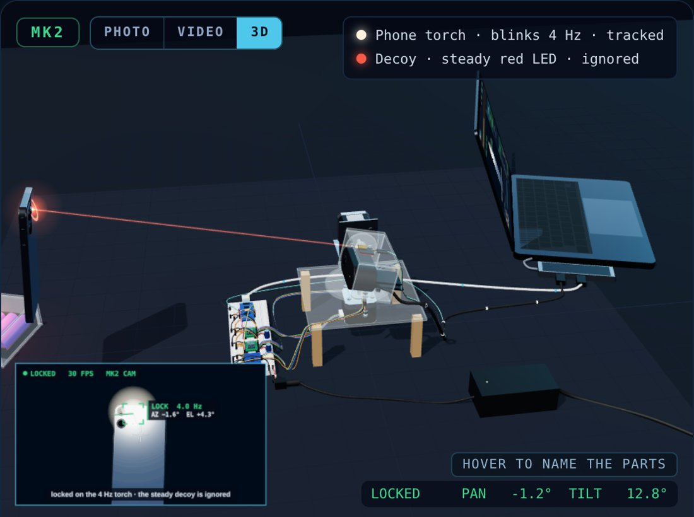
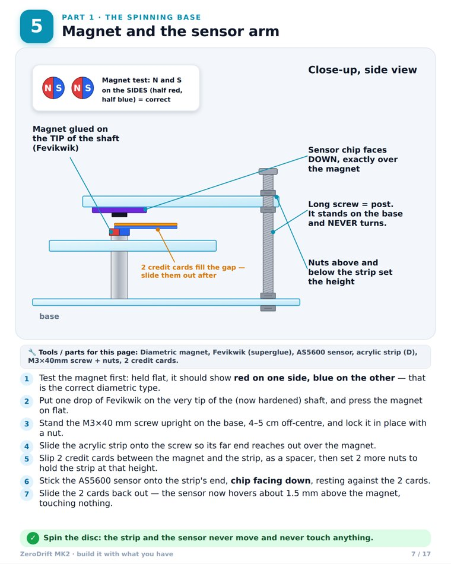

How to run, test and trust ZeroDrift
ZeroDrift is a Pointing, Acquisition and Tracking (PAT) system for Free-Space Optical Communication (FSOC). It finds a partner's blinking beacon with a camera, ignores every other light, and keeps the laser aimed at it. This page is the exact routine our team follows, and every claim links to its proof.
Purpose & scope
One tracking engine, three ways to run it. Whichever you use, you follow the same steps and write the same record, so results can be compared.
A · Simulation test
Replays real engine runs in the Console and grades them automatically. No hardware needed.
 ▲ real Console screenshot
▲ real Console screenshot
B · Live optical tracking
Your laptop webcam locks the 4 Hz beacon inside the browser, live.
 ▲ frame from our unedited recording
▲ frame from our unedited recording
C · MK2 terminal
A two-axis stepper-motor gimbal closes the loop on real hardware.

▲ 3D digital twin of the buildFull forms used on this page
Every short form, written out once, so nobody has to guess.
How the software decides
Every 33 milliseconds the engine runs this loop once. Every box is real code in src/fsoc_pat/pipeline.py, and every YES / NO is a decision it actually makes.
What the status light means
The tracker is always in exactly one of these five states. COAST is normal: it happens every time the beacon blinks off.
Equipment
What you need for each mode. needed · not needed
| ITEM | WHAT IT DOES | A · SIM | B · LIVE | C · MK2 |
|---|---|---|---|---|
| Laptop + Chrome / Edge | Runs everything; Web Serial talks to the rig over USB | |||
| Webcam | Built-in camera (B) or the USB camera on the head (C) | |||
| Beacon | Red LED on an Arduino Nano blinking at 4 Hz, or a phone torch | |||
| Decoy | Steady red LED. Must be ignored | |||
| MK2 terminal | Nano · 2 × A4988 drivers + NEMA17 motors · AS5600 encoder · KY-008 laser | |||
| 12 V 2 A adapter | Motor power only, through the DC jack and kill switch | |||
| Multimeter | Rail checks and setting Vref |
Safety first
Read before Procedure C. The person holding the 12 V switch can stop everything instantly.
Laser
Never at eyes, people or mirrors. Keep it off (L0) unless a step needs it.
Electrical
12 V goes only to the motor rail. Wire with everything unplugged. Never swap a motor while powered.
Moving head
Hands and cables clear. Switch off at any grinding, smell or heat.
Procedure A · Simulation test
No hardware. About 5 minutes per scenario. The Console grades the run for you.
Choose a scenario
Decoy field (130 s) · ISS pass over Bengaluru (45 s) · Hard turbulence (30 s).
Watch the lock
State goes SEARCH → ACQUIRE → TRACK; the error number drops.
✓ green brackets stay on the beacon, never on a red ◇ decoyRead the Test Record
Opens by itself at the end: nine test cases, each graded PASS / FAIL.
✓ 8 / 8 PASSEDLog it
Write the record ID, score and date in the log (Section 9).

Procedure B · Live optical tracking
Just a laptop, a beacon and a steady decoy. Dim the room for best results.
Set the scene
Beacon on (4 Hz) and the steady decoy, both in view.
Show the beacon
Hold it anywhere in the picture.
✓ LOCKED · 4.0 Hz · in about 2 sMove it around
Slowly, then fast, across the whole view.
✓ lock follows · decoy is never boxedCover it for 1 second
Then uncover it.
✓ COAST, then relocks by itselfBright room and a red LED? Turn on RED BEACON FILTER in Settings.Procedure C · MK2 terminal
Three stages: check it unplugged, commission it over USB, then close the loop on the beacon.
C.1 · Pre-power check (everything unplugged)
| CHECK | EXPECT |
|---|---|
| 12 V rail ↔ 5 V rail | no beep |
| 12 V rail ↔ GND | no beep (a short chirp is the capacitor: OK) |
| A4988 VMOT / VDD | 12 V / 5 V |
| EN · MS1–3 · RST–SLP | GND · 5 V · joined |
| STEP / DIR | pan D2 / D3 · tilt D4 / D5 |
| Laser · sensor bus | D7 · A4 / A5 through the multiplexer |
| Turn by hand | no cable tight at the limits |
C.2 · Commissioning over USB serial (115200 baud)
| TYPE | YOU SHOULD SEE |
|---|---|
| ? | status line · encoders found |
| P200 T0 | pan turns ≈ 22.5° |
| P0 T100 | tilt nods ≈ 11° |
| C | both return to centre |
| L1 / L0 | laser on / off |
C.3 · Closed loop
CONNECT RIG
Pick the Nano's port in the browser.
MK2 CAMERA (USB)
Switch to the camera on the head.
TEST MOTION
A short self-move on both axes.
✓ both axes move and returnShow the beacon
Walk it around the room.
✓ head follows · laser stays on it · decoy ignored

Shutdown, always in this order
Centre + laser off
C then L0
12 V OFF
Flip the kill switch.
USB out
Then the adapter from the wall.
Beacon & decoy off
Batteries out for storage.
Acceptance criteria
The limits are fixed before a run and the same for every scenario. The bar shows how much of each limit the ISS-pass run actually used.
| ID | PARAMETER | PASS IF | ISS PASS RUN | USE OF LIMIT | |
|---|---|---|---|---|---|
| TC-01 | Time to first lock | ≤ 3.0 s | 1.27 s | PASS | |
| TC-02 | Lock held after first lock | ≥ 90 % | 98.3 % | PASS | |
| TC-03 | Median pointing error | ≤ 1,047 µrad | 198 µrad | PASS | |
| TC-04 | 95th-percentile error | ≤ 2,618 µrad | 692 µrad | PASS | |
| TC-05 | Beacon kept in view | ≥ 95 % | 100 % | PASS | |
| TC-06 | Frames locked on a decoy | ≤ 1 % | 0 % | PASS | |
| TC-07 | Compute time per frame (95th %) | ≤ 33.3 ms | 19.1 ms | PASS | |
| TC-08 | Frames over the time budget | ≤ 1 % | 0.07 % | PASS | |
| TC-09 | Re-acquisitions | recorded only | 4 | INFO |

If something goes wrong
Find the symptom, check the cause, apply the fix.
| SYMPTOM | LIKELY CAUSE | FIX |
|---|---|---|
| Never locks | Room too bright · beacon not at 4 Hz | Dim the room · RED BEACON FILTER · check the beacon code |
| Locks a lamp | Flicker near 4 Hz · strong reflection | Take it out of view · keep windows out of frame |
| Motor only buzzes | Coil pair split across 1A/1B and 2A/2B | Re-pair with the meter (2–4 Ω per pair) |
| No holding torque | No 12 V · EN not at GND · RST–SLP open | Switch on · check the three links |
| Moves 16× wrong | MS1–MS3 not all at 5 V | All three to the 5 V rail |
| Driver gets hot | Vref too high · no heat sink | Set 0.55 V · fit the heat sink |
| Encoder reads nothing | Axial magnet · chip off-centre · gap too big | Diametric magnet · centred · 1–2 mm |
| CONNECT RIG does nothing | Browser without Web Serial · port busy | Chrome / Edge · close other serial monitors |
Records & roles
One line per run, signed by the reviewer. No record, no result.
Runs the steps
Follows this page and fills in the log.
Holds the switch
Hand on the 12 V kill switch in Procedure C.
Signs off
Checks every run against Section 7.
| DATE | PROCEDURE | RECORD ID | RESULT | OPERATOR | REVIEWER |
|---|---|---|---|---|---|
| 28-09-26 | A | ZD-SIM-DECOYS | 8 / 8 PASS | ||
| REV | DATE | CHANGE |
|---|---|---|
| 1.0 | 28 Sep 2026 | First release |
| 1.1 | 28 Sep 2026 | Graphic layout, engine flowchart, acceptance bars |
| 2.0 | 28 Sep 2026 | Light theme, full forms, proof beside every claim |